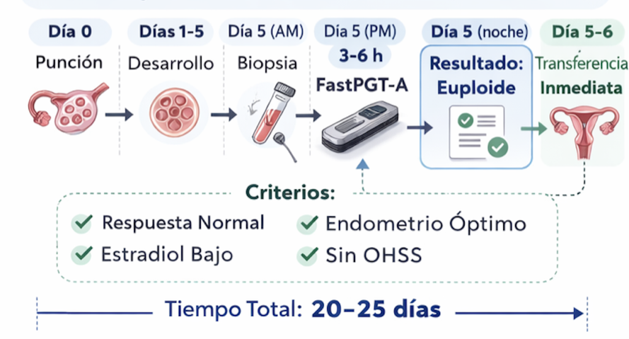
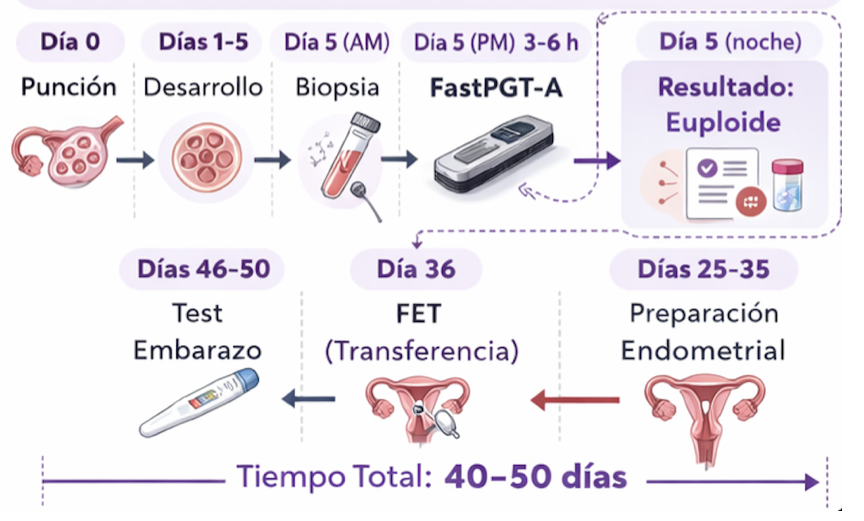

Apéndice Médico-Clínico
- Marco clínico del FastPGT
- Estrategia transferencia en fresco
- Estrategia vitrificar y congelar sólo euploides
Insumos: Apéndice técnico.
Delivery 4: Apéndice económico. Documento Ppal.
1. Marco Clínico de FastPGT-A
FastPGT-A permite obtener resultados de eu/aneuploidía embrionaria en una ventana compatible con el mismo día de la biopsia (día 5 post-punción). Esta reducción sustancial del tiempo diagnóstico modifica el paradigma operativo tradicional del PGT-A, en el cual los resultados demoran 10–14 días y obligan a un esquema universal de vitrificación y transferencia diferida.
La disponibilidad temprana del resultado no implica una única conducta clínica, sino que habilita al menos dos estrategias diferenciadas, las cuales pueden seleccionarse en función del perfil endocrino, endometrial y clínico de la paciente:
Transferencia embrionaria en fresco (mismo ciclo)
Freeze-all modificado (ciclo diferido optimizado)
La elección no es tecnológica sino médica, basada en criterios objetivos y preferencias informadas.
2. Transferencia Embrionaria en Fresco
2.1 Concepto
Consiste en realizar la transferencia embrionaria el mismo día o dentro de las 24 horas posteriores a la obtención del resultado genético, aprovechando la ventana fisiológica de implantación del ciclo estimulado.
Esta estrategia es posible únicamente cuando el diagnóstico genético se obtiene dentro de una ventana compatible con la sincronía embrión–endometrio.

2.2 Timeline estimado
- Día 0: Punción ovárica
- Días 1–5: Desarrollo embrionario
- Día 5 (mañana): Biopsia + preparación de biblioteca
- Día 5 (tarde): Secuenciación MinION + resultado
- Día 5–6: Transferencia en fresco
- Día 16–20: Test de embarazo
Duración total estimada: ~20–25 días desde punción hasta test.
2.3 Criterios clínicos orientativos
Indicadores favorables:
- Respuesta ovárica normal o moderada
- Estradiol en trigger < 3,500–4,000 pg/mL
- Grosor endometrial 7–12 mm con patrón trilaminar
- Ausencia de riesgo clínico de OHSS (Ovarian hyperstimulation syndrome)
- ≥1 embrión euploide confirmado
- Sin historia de falla de implantación recurrente
Contraindicaciones relativas:
- Alta respuesta ovárica (>20 ovocitos)
- Estradiol elevado
- Riesgo de OHSS
- Endometrio subóptimo
2.4 Potenciales ventajas
Clínicas
- Sincronía embrión–endometrio fisiológica
- Desarrollo embrionario continuo (sin vitrificación)
- Reducción de manipulaciones
- Tiempo a embarazo minimizado
Operativas
- Eliminación de vitrificación y warming
- Simplificación del flujo asistencial
- Reducción de ciclos diferidos
Económicas
- Evita costos de vitrificación y FET
- Reducción indirecta de carga operativa
2.5 Riesgos y limitaciones
Fisiológicos
- Posible alteración de receptividad endometrial en ciclos con estradiol elevado
- Evidencia mixta en literatura respecto a comparación con FET
Logísticos
- Necesidad de coordinación estricta el día 5
- Ventana estrecha de decisión clínica
Clínicos
- No aplicable a todos los perfiles
- Requiere validación robusta del método rápido
3. Freeze-All Modificado (FET Optimizado)
3.1 Concepto
Consiste en vitrificar únicamente los embriones euploides identificados el día 5 y realizar transferencia en un ciclo posterior con preparación endometrial optimizada.
La diferencia respecto al protocolo tradicional es que la información genética está disponible inmediatamente, eliminando la espera de 10–14 días.

3.2 Timeline estimado
- Día 0: Punción
- Día 5: Biopsia + resultado + vitrificación selectiva
- Días 6–25: Recuperación
- Días 26–35: Preparación endometrial
- Día 36: FET
- Día 46–50: Test
Duración total estimada: ~40–50 días.
En comparación con protocolos tradicionales diferidos (60–70 días), se reduce el tiempo total en aproximadamente 2–3 semanas.
3.3 Indicaciones frecuentes
- Alta respuesta ovárica
- Estradiol elevado
- Riesgo de OHSS
- Endometrio subóptimo
- Historia de falla de implantación
- Preferencia por mayor control del timing
3.4 Ventajas
Clínicas
- Endometrio preparado en entorno hormonal controlado
- Eliminación de riesgo de OHSS
- Mayor flexibilidad para estudios adicionales (ERA, etc.)
- Certeza de euploidía antes de FET
Operativas
- Mayor control de agenda clínica
- Distribución de carga de trabajo
- Vitrificación selectiva
3.5 Limitaciones
- Mayor tiempo total hasta embarazo
- Requiere ciclo adicional
- Manipulación embrionaria adicional (vitrificación/warming)
- Costos asociados a FET
4. Comparación Estratégica
| Aspecto | Pathway A (Fresco) | Pathway B (Freeze-All Modificado) |
|---|---|---|
| Tiempo total | 20–25 días | 40–50 días |
| Riesgo OHSS | Potencial en alta respuesta | Evitado |
| Manipulación embrionaria | Mínima | Vitrificación + warming |
| Flexibilidad clínica | Baja | Alta |
| Receptividad endometrial | Dependiente del ciclo estimulado | Optimizada |
No existe una estrategia universalmente superior; la indicación es individualizada.
5. Ventaja Estratégica de FastPGT-A
El protocolo tradicional impone freeze-all por limitación temporal diagnóstica.
FastPGT-A elimina esa restricción y permite que la decisión clínica el día 5 se base en:
- Resultado genético
- Estado endometrial
- Riesgo clínico
- Preferencia informada del paciente
El valor diferencial no es únicamente la velocidad, sino la recuperación de la individualización terapéutica.
6. Consideraciones Éticas
En el contexto argentino no existe legislación específica sobre descarte de embriones aneuploides.
La práctica clínica habitual es no transferir embriones con aneuploidías completas por su baja probabilidad de viabilidad. No obstante, el paciente puede solicitar criopreservación por razones éticas personales, asumiendo costos asociados.
La decisión debe basarse en consentimiento informado claro y documentado.
7. Conclusión
FastPGT-A transforma el PGT-A de un procedimiento forzosamente diferido en una herramienta diagnóstica con opciones clínicas adaptativas.
Su implementación adecuada permite:
- Reducción sustancial del tiempo hasta la transferencia.
- Optimización del flujo asistencial.
- Mayor personalización terapéutica.
- Potencial mejora en experiencia del paciente.
La validación clínica prospectiva y el seguimiento sistemático de resultados son esenciales para consolidar su integración en la práctica reproductiva.